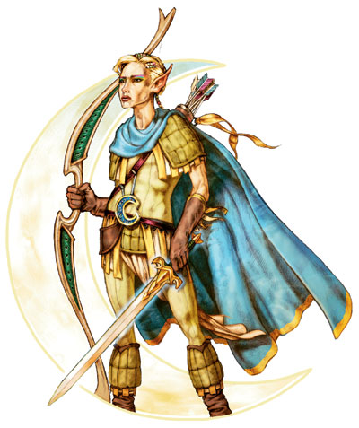
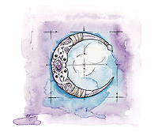

柯瑞隆·拉瑞斯安

精灵之创造者、守护者与统治者；生命守护者
伟大神力
圣徽：银新月

居住位面：Arborea
阵营：混乱善良
神职：精灵，魔法，艺术与工艺，音乐，战争
信徒：精灵，半精灵，吟游诗人
牧师阵营：混乱善良，混乱中立，中立善良
领域：混乱，善良，保护，战争
偏好武器：长剑
正如其名，精灵之神柯瑞隆·拉瑞斯安一般是以一位身着天蓝色斗篷，手持长弓与长剑的雌雄同体的精灵的形象示人的。他还佩带着一件巨大，雕饰他的“银新月”圣徽形象的项链。他的行动一向给人以敏捷而优雅的感觉，正如一只猫。
柯瑞隆·拉瑞斯安是精灵一族的创造者和守护者。在神职上，他管理着那些精灵一族高度重视的东西，诸如魔法，音乐，艺术，手艺，诗歌，以及战争。兽人之神格乌什是他的死敌，这是因为柯瑞隆·拉瑞斯安曾在战争中打瞎了格乌什的一只眼睛。
教义
柯瑞隆·拉瑞斯安对一且有关精灵一族的安宁与幸福的事务都十分地关注。他同时也对精灵一族内部任何的邪恶污点保持着高度的警戒，一但发现，他就会迅速扑灭这些邪恶的火焰和并消除影响。柯瑞隆·拉瑞斯安在放逐精灵一族中的邪恶分子并最终导致卓尔精灵从精灵中分裂出去，下到地底这件事中扮演了主要角色。
柯瑞隆·拉瑞斯安鼓励着人们变得有自信，随时警戒危险，以及学会欣赏世界的美丽。正是柯瑞隆·拉瑞斯安影响着精灵们去为精彩地度过他们那漫长的生命而学习魔法与剑术，去爱护森林并去做森林的守卫者与管理着，在继承了战士血统与精神的同时，也不忘记心中的美学精神。
神职人员与神殿
柯瑞隆·拉瑞斯安的牧师一般都穿着蓝色的斗篷，他们一般是以领导者，指引者，外交官，以及将军等身份服务于精灵社会的。他们会在尽力提高自己技巧的同时，把这些魔法与格斗的艺术教授给其他的精灵。尽管当精灵们的生活方式都是很独立的，但有些时候他们仍会发生一些争执，这时候柯瑞隆·拉瑞斯安就会出面扮演仲裁人和调停者的角色。他们也热衷于保护，甚至供养其他善良的森林生物。
人们可以在任何有精灵居住的地方找到柯瑞隆·拉瑞斯安的神殿，不过，大多数是在森林中。尽管每一座柯瑞隆·拉瑞斯安的神殿都有所不同，在设计上被糅合入了当地周围的自然景致，尽显自然之美，但他们都无一例外的也很重视建筑的牢固与防御性。它们一般坐落于山丘之上，河流交叉之处，或者其他一些具有战略意义的地方。植物与树木往往被视作柯瑞隆·拉瑞斯安神殿的一部分，或是装饰，或是用来支撑结构。
柯瑞隆·拉瑞斯安
战士19级/法师20级/牧师10级
中体型外界生物（混乱，善良）
神格等级：19
生命骰：20d8+140（外界生物）加19d10+133（战士）加20d4+140（法师）加10d8（牧师）（993hp）
先攻调整值：+21，总是最先行动（+17敏捷，+4精通先攻，绝对先攻）
速度：60尺
防御等级：87（+17敏捷，+19神格等级，+32天生防御，+9偏转）
攻击加值：+5锐锋加速混乱长剑 +91/+91/+86/+81/+76近战；或者+5力量混乱超距加速复合长弓（+10力量调整）配合+5箭 +90/+90/+90/+85/+80/+75远程；或者法术 +74近战接触或 +81远程接触。攻击检定自然掷骰总是取20，伤害按重击伤害计算。
伤害加值：+5锐锋加速混乱长剑 1d8+36/15-20；或者+5力量混乱超距加速复合长弓（+10力量调整）配合+5箭 1d8+22/19-20/*3；或者使用法术。伤害检定总是按最大结果计算（长剑44点伤害，长弓30点伤害）
占据/威胁范围：5尺*5尺/5尺
特殊攻击：每日12次驱散不死生物，领域神力，超凡神圣能力，类法术能力
特性：精灵种族特性，神术免疫，伤害减免 52/+4，火系法术抗力 39，神术自发性施法，理解、交谈及阅读所有语言并直接于任何19里内的生命存在交谈，远程沟通，神祗国度，随意无误传送，随意位面旅行，魔宠（猫）， SR51，神圣光环（19里，DC37）
豁免调整值：坚韧 +82，反射 +92，意志 +84。豁免检定掷骰自然结果总是取20
能力值：力量30，敏捷44，体质24，智力35，感知29，魅力29
技能：炼金术 +70，估价 +36，平衡感 +54，唬骗 +44，攀爬 +51，专注 +78，手艺（制弓） +95，手艺（制武器） +95，手艺（木工） +95，交涉 +63，易容 +44，脱逃术 +52，训练动物 +44，躲藏 +63，威吓 +46，跳跃 +69，知识（奥术） +83，知识（宗教） +83，聆听 +67，潜行 +52，表演 +44，骑术（马） +54，探知 +54，搜索 +71，察言观色 +65，辩识法术 +68，侦察 +67，游泳 +51，翻滚 +56，绳技 +47，野外知识 +57。技能检定掷骰自然结果总是取20
专长：盲斗，格斗反射，制造权杖，制造权杖，制造魔杖，制造奇物，拨挡飞箭，神圣力量，闪避，远避物质，专家，制造戒指，高级法术渗透，精通重击（复合长弓），精通重击（长剑），精通卸除武器，精通先攻，精通绊摔，精通徒手攻击，军用武器擅长（复合长弓），军用武器擅长（复合短弓），军用武器擅长（长弓），军用武器擅长（短弓），军用武器擅长（长剑），军用武器擅长（细剑），机动，近距射击，猛力攻击，精确射击，即时备战，法术瞬发，速射，法术增远，神圣法术，抄录卷轴，法术渗透，条约攻击，法术定发，高级专家，追踪，武器专攻（长剑），武器专攻（复合长弓），武器专精（长剑），武器专精（复合长弓），旋风攻击
精灵种族特性：对抗魅惑类法术或效果时，意志检定拥有+2种族奖励加值，昏暗视觉，自动感应到五尺内密门并进行搜索检定。
神圣免疫：属性伤害，属性吸取，酸，冷，即死效果，疾病，瓦解，电，能量吸取，心智影响效果，麻痹，毒，睡眠，震慑，变形，监禁，放逐。
超凡神圣能力：改变形态，改变现实，改变大小，指明攻击，奥术熟稔，区域神力护盾，自动魔法转换（奥术瞬发），天神下凡，战斗第六感，操控生物（精灵），制造高级人工生命，制造人工生命，神力箭术，神力风暴，神力敏捷，神力创造，神力护盾，神力施法，神力武器专攻（长剑），神力武器专精（长剑），额外领域（混乱），生命礼物，长剑熟稔，自发奥术施法，绝对先攻，带“+”为独特能力，下文将说明。
领域神力：施展混乱类法术时，施法者等级加1；施展善良类法术时，施法者等级加1；每日12次保护结界（结界内对象在下次豁免检定中获得+10的抗力加值，最大持续时间1小时）
类法术能力：柯瑞隆·拉瑞斯安可以相当于施法者等级为30级使用混乱类和善良类法术能力，以相当于施法者等级为29使用其他类法术能力。类法术能力的基本豁免DC为38+法术等级。Aid,animate objects,antimagic field,blade barrier,chaos hammer,cloak of chaos,dispel evil,dispel law,divine power,flame strike,holy aura,holy smite,holy word,magic circle against evil,magic circle against law,magic vestment,magic weapon,mind blank,power word.blind,power word.kill,power word.stun,prismatic sphere,protection from elements,protection form evil,protection from law,repulsion,sanctuary,shatter,shield other,spell immunity,spell resistance,spiritual weapon,summon monster IX（限以混乱类及善良类法术施放）,word of chaos.
每日神术：6/8/7/6/6/5；基础DC=21+法术等级
每日奥术（0-12级）：4/7/6/6/6/6/5/5/5/5/2/2/2；基础DC=21+法术等级
长剑熟稔（特有超凡神圣能力）：柯瑞隆·拉瑞斯安手持任意种类的长剑时，他可以将他的敏捷调整值加到攻击加值上。
财产：柯瑞隆·拉瑞斯安拥有一把名为“萨安德里安”的 +5锐锋加速混乱长剑。此剑制造施法者等级为25，重6磅。他另一把名为“卡林里安”的+5力量（+10力量调整值）超距加速混乱复合长弓。此弓制造施法者等级为25，重3磅。
其他神圣能力
作为一个强大神力，柯瑞隆·拉瑞斯安在任何掷骰中（包括攻击骰，伤害骰，豁免）自动取最高值，他是不朽的。
感知：柯瑞隆·拉瑞斯安可以看见（无论通常视觉与昏暗视觉），听见，触摸和嗅到19里的距离。他可以以一个标准动作感知到任何动物，他的信徒，圣迹，与他有关的物体和任何他的名字在一个小时内被说出的地点周围19里内的一切。他能够立即将她的感知延伸到20个地方。他立即能够在2个地方阻止神格等级等于或者小于她的神的感知力量，时间最长可达19个小时。
神职感知：柯瑞隆·拉瑞斯安可以感知到尘世间十九周前或十九周后所发生的任何有关精灵一族的安宁与幸福的事件。他可以感知到任何精灵试图或正在做手艺活，从事艺术工作，施法及争战。
自动动作：柯瑞隆·拉瑞斯安能够以一个自由动作使用任何他的手艺系技能，只要该项任务的DC在30或者更低。每轮他能够完成20个类似的自由动作。
创造魔法物品：柯瑞隆·拉瑞斯安可以制造出附带魔法效果的任何轻型和中型盔甲，任何简单和军用武器，以及魔杖和法杖，他还可以创造出任何与木工或是敏捷与灵巧有关的魔法物品，比如精灵斗篷。
化身
柯瑞隆·拉瑞斯安的化身一般是男性的，不过不总是如此。他们一般以精灵的形象出现，不过有时候视情况也会化身作半人马，森林女妖精，小妖精或是其他森林生物的形象。柯瑞隆·拉瑞斯安一般派遣他的化身去巡逻精灵国度的边境，或者去监视精灵国度的领导者是否贤明。
柯瑞隆·拉瑞斯安的化身：如同柯瑞隆·拉瑞斯安的本体，但以下除外：神格等级为9；防御等级67（接触46，措手不及50）；攻击加值 +81/+81/+76/+71/+66近战（1d8+22，+5锐锋加速混乱长剑）或+80/+80/+80/+75/+70/+65远程（+5力量混乱超距加速复合长弓[+10力量调整]配合+5箭），或法术 +64近战接触或 +71远程接触；特性：伤害减免 44/+4，火系法术抗力 29，SR41，神圣光环（900尺，DC27），豁免调整值 坚韧 +72，反射+82，意志+74；所有技能调整值减10
超凡神圣能力：奥术熟稔，自动魔法转换（奥术瞬发），战斗第六感，操控生物（精灵），神力箭术，神力风暴，神力敏捷，神力创造，神力护盾，神力施法，神力武器专攻（长剑），神力武器专精（长剑），长剑熟稔，自发奥术施法，带“+”为独特能力，下文将说明。
类法术能力：施法者等级为19级，基本豁免DC为28+法术等级。因为没有额外领域的超凡神圣能力，柯瑞隆·拉瑞斯安化身失去混乱领域的使用权，并失去如下类法术能力：animate objects,dhaos hammer,cloak of chaos,dispel law,magic circle against law,protection from law,shatter,summon monster IX,word of chaos.